Manual de Marca · v2.3
Hagamos que las cosas pasen.
Manual mínimo: paleta, tipografía, isotipo y las 11 reglas no negociables.
Sin inventario de piezas — se rehace cuando existan piezas que inventariar.
Referencia completa: README.md de este repo.
Contraste sobre . Ember sobre Deep Ink: 6.5:1. Texto sobre Ember: siempre var(--bg), 12.2:1 — nunca blanco.

El fondo determina la variante: oscuro → isotipo-dark.svg, claro → isotipo-light.svg.
Facetas Ember invariables en ambos modos. Nunca se deforma, rota ni lleva efectos.
letter-spacing:-.035em en toda la escala. El peso 300 de Plus Jakarta Sans deja de ser recurso de display. El 800 no existe.| Archivo / scope | Regla | Excepción |
|---|---|---|
| assets/isotipo-light.svg | --border token | stroke:#2A1F3D fijo en el hexágono — no sincronizar |
| archive/Firma de Correo v1.html | Sin hex crudos | Email no soporta variables CSS — valores sí se actualizan |
| Foto de perfil · nav · modal (sitio) | Sin efectos | mask-image / backdrop-filter — funcionales, no decorativos |